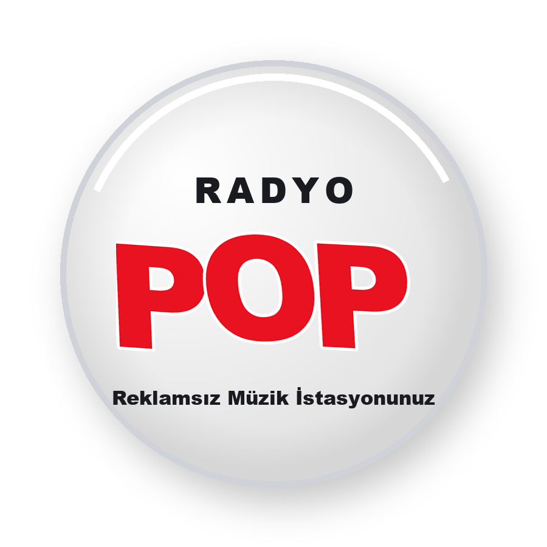
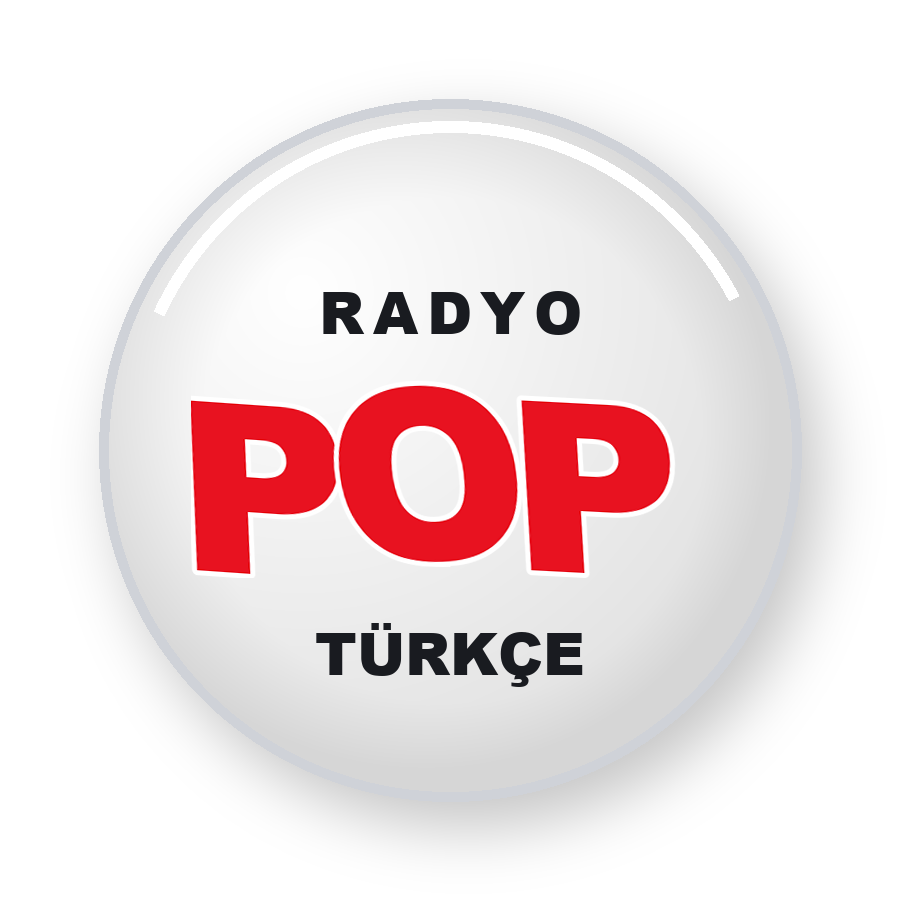
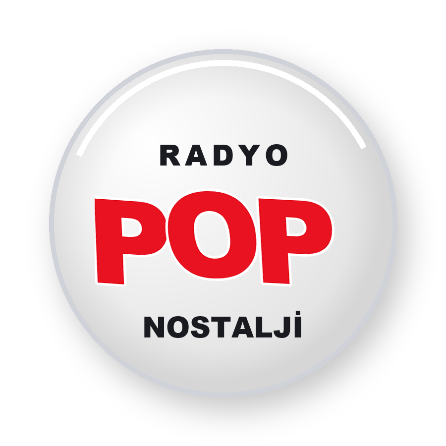
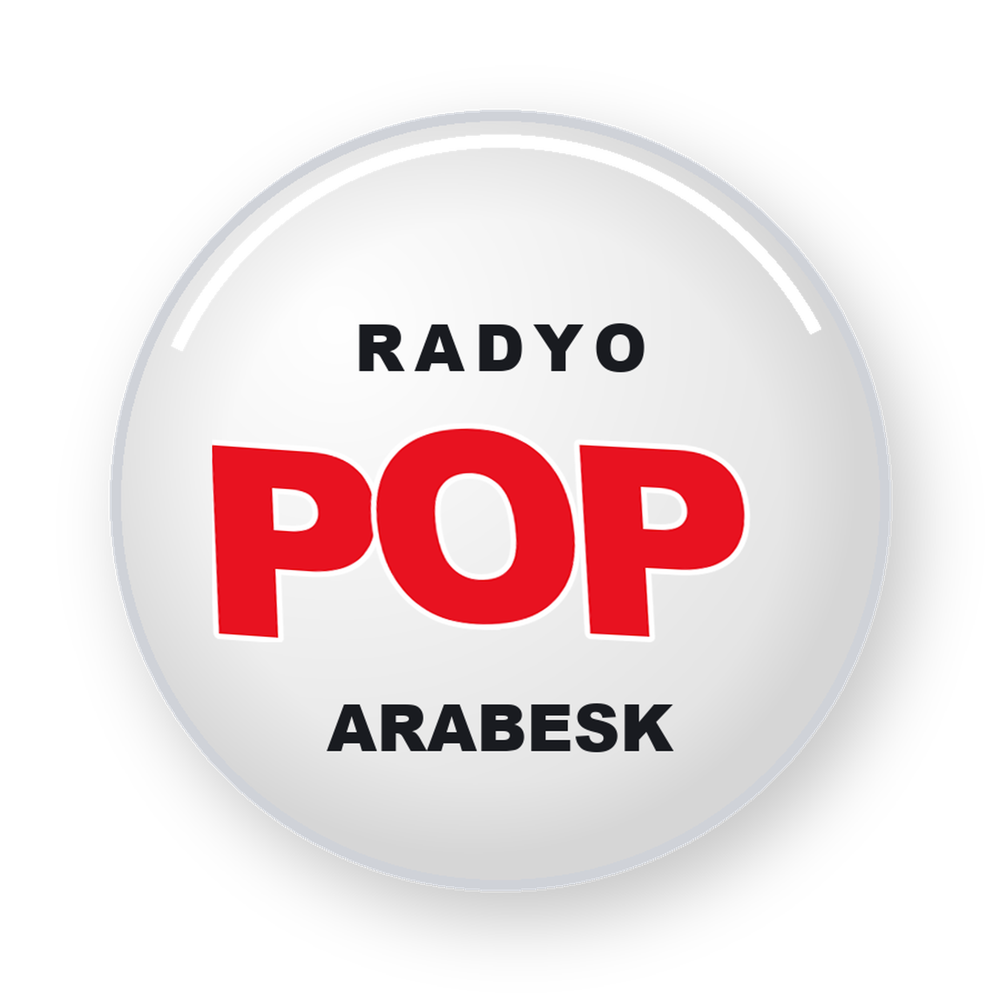

Türkçe
Radyo Pop; reklamsız, kar amacı gütmeyen bir müzik istasyonudur. Dinleyicilerine günün her saatinde sade, kesintisiz ve keyifli bir radyo deneyimi sunmak için yayın yapar.
Türkçe, Yabancı, Nostalji, Remix ve Arabesk olmak üzere 5 farklı türde yayınlarımızla farklı müzik zevklerini tek çatı altında buluşturuyoruz.
Yayın, öneri ve iletişim için bize e-posta gönderebilirsiniz.